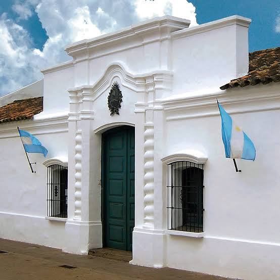

Bem-vindo à Argentina!
Localizada na América do Sul, a Argentina é um país conhecido por suas belas paisagens, sua rica história, suas tradições culturais e sua paixão pelo futebol.
Da movimentada Buenos Aires às montanhas dos Andes, o país reúne atrações naturais, construções históricas e costumes que fazem parte de sua identidade.
Descubra a Argentina
História

Conheça a colonização espanhola, a independência e os acontecimentos que marcaram a formação do país.
Futebol
O futebol é uma das maiores paixões dos argentinos. Conheça suas conquistas e seus grandes jogadores.
Cultura
Descubra as tradições argentinas, o tango, a gastronomia e os costumes do país.
Arquitetura
Conheça a arquitetura histórica da Argentina, com destaque para a influência jesuíta em Córdoba.